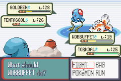
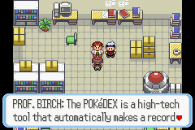

Publishing Info
- Published by: Pokémon Company, Nintendo of America Inc.
- Developed by: Game Freak, Inc., Creatures, Inc.
- Released: November 21, 2002

Description
Pokémon Ruby Version is a role-playing game in which you travel the world of Hoenn and become the ultimate Pokémon Master! You travel the land catching Pokémon, battling trainers, and stopping the nefarious Team Magma from summoning Groudon and submerging the world to a watery grave...
Game Categories
- Genre: RPG
- Perspective: Diagonal-down
- Pacing: Turn-based
- Gameplay: JRPG
- Setting: Fantasy

Quote
Pokémon fans will undoubtedly enjoy this third edition in the franchise, though non-fans may not like it too much. Some people may become bored of it due to its recycled nature. Nonetheless, Pokémon Ruby's a solid title.
-- https://www.mobygames.com/game/8459/pokemon-ruby-version/user-review/2618634/